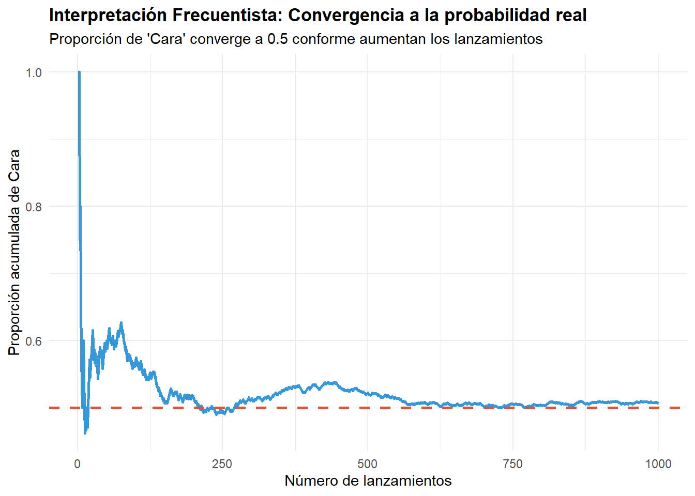
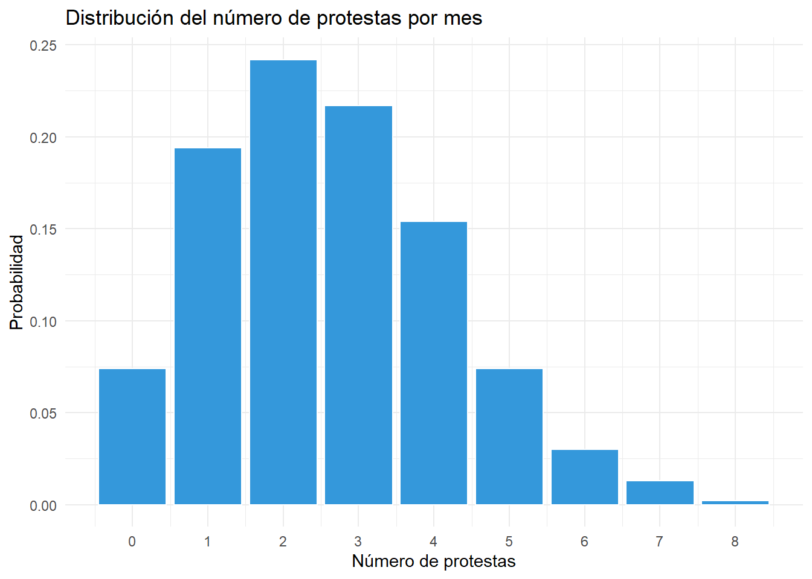
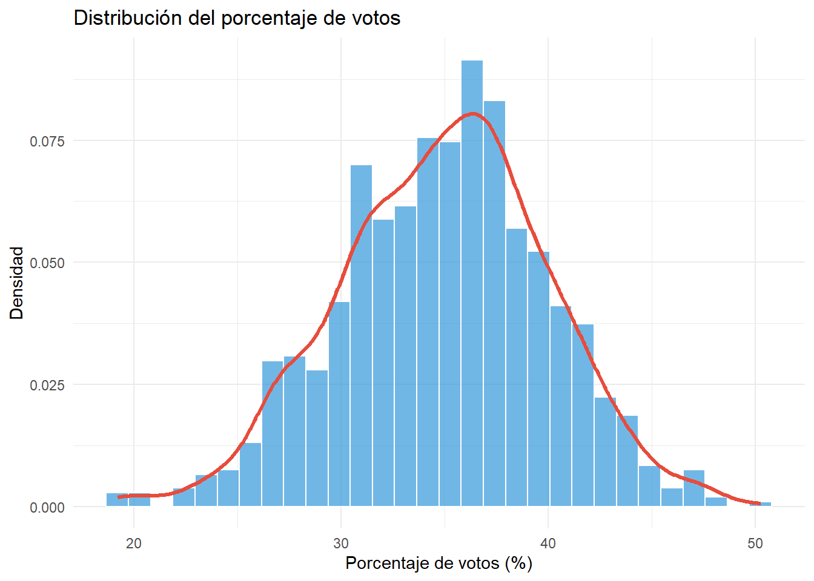
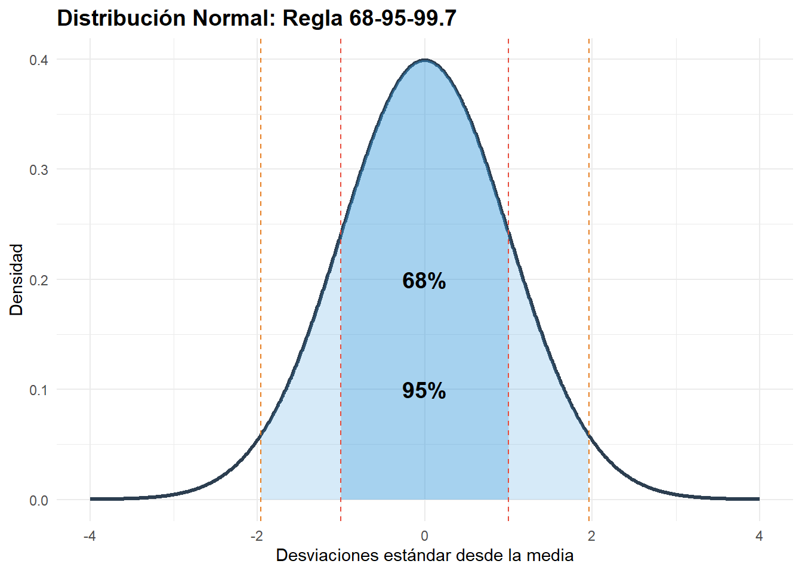
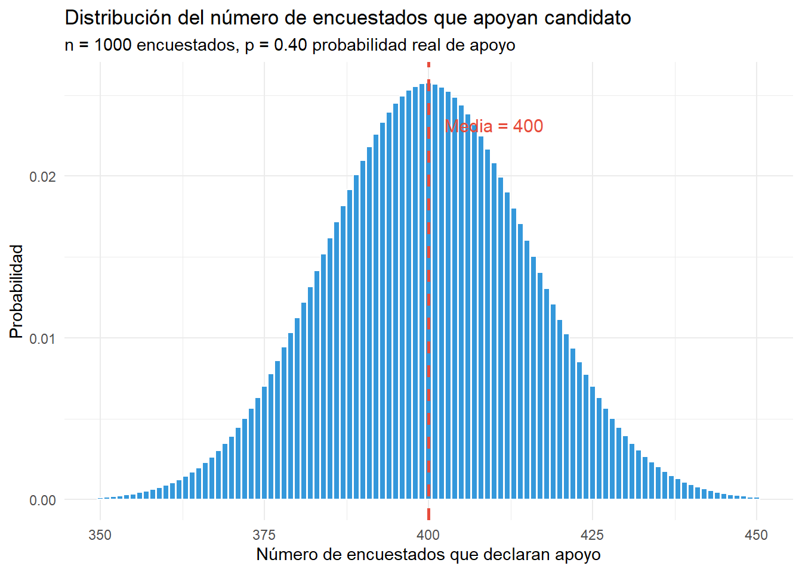
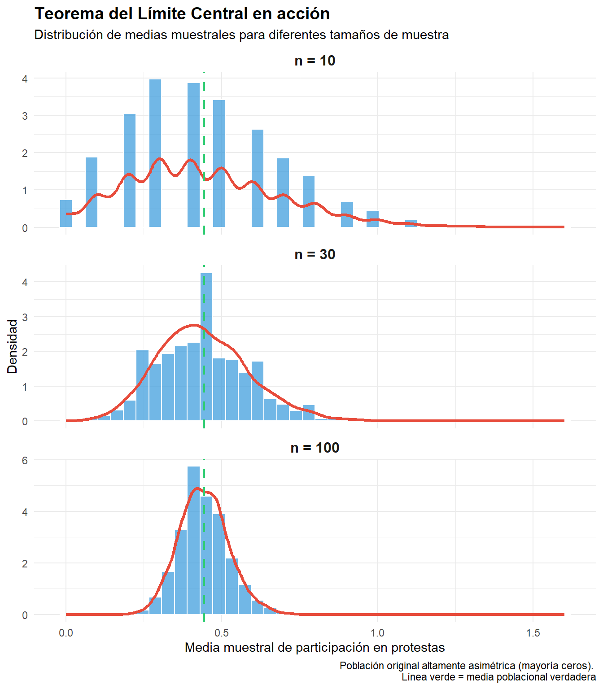

7 Introducción a probabilidad
7.1 Objetivos del capítulo
Al finalizar este capítulo, serás capaz de:
- Comprender el concepto de probabilidad y su relación con la incertidumbre
- Distinguir entre interpretaciones frecuentista y bayesiana de probabilidad
- Calcular probabilidades básicas y aplicar reglas fundamentales
- Identificar y trabajar con variables aleatorias discretas y continuas
- Reconocer distribuciones de probabilidad comunes en ciencias sociales
- Comprender el Teorema del Límite Central y su importancia para la inferencia
7.3 Conceptos básicos de probabilidad
7.3.1 Definición y notación
Una probabilidad es un número entre 0 y 1 que cuantifica qué tan probable es que ocurra un evento:
- \(P(A) = 0\) significa que el evento \(A\) es imposible
- \(P(A) = 1\) significa que el evento \(A\) es seguro
- \(P(A) = 0.5\) significa que \(A\) tiene la misma probabilidad de ocurrir que de no ocurrir
Por ejemplo, si en una encuesta con 1,200 entrevistados, 360 declaran que votarán por candidatos del Frente Amplio en elecciones legislativas chilenas, podemos estimar: \(P(\text{Voto FA}) = \frac{360}{1200} = 0.30\). Esto NO significa que exactamente 30% de los votantes votará por el FA el día de la elección. Significa que, basándonos en nuestra muestra, estimamos esa probabilidad con cierto nivel de incertidumbre (que cuantificaremos en el próximo capítulo con intervalos de confianza).
7.3.2 Interpretaciones de probabilidad
Existen dos interpretaciones fundamentales de qué significa “probabilidad”:
1. Interpretación frecuentista2
La probabilidad es el límite de la frecuencia relativa cuando un experimento se repite infinitas veces. Por ejemplo, \(P(\text{Cara}) = 0.5\) al lanzar una moneda significa que, si lanzamos la moneda millones de veces, aproximadamente 50% serán caras.
2. Interpretación bayesiana
La probabilidad cuantifica grado de creencia o certeza subjetiva sobre un evento. Permite asignar probabilidades a eventos únicos (como “¿cuál es la probabilidad de que Chile tenga una nueva Constitución en 2026?”).
7.3.3 Reglas fundamentales de probabilidad
Regla de la suma (eventos mutuamente excluyentes)
Si \(A\) y \(B\) no pueden ocurrir simultáneamente: \[P(A \text{ o } B) = P(A) + P(B)\]
Por ejemplo, en las elecciones municipales 2024 en Santiago, si un votante puede elegir solo un candidato: \(P(\text{Izquierda o Derecha}) = P(\text{Izquierda}) + P(\text{Derecha})\).
Regla del complemento
\[P(\text{no } A) = 1 - P(A)\]
Por ejemplo, si \(P(\text{Voto})=0.52\) en elecciones legislativas chilenas: \(P(\text{Abstención}) = 1 - 0.52 = 0.48\).
Regla del producto (eventos independientes)
Si \(A\) y \(B\) son independientes (la ocurrencia de uno no afecta la probabilidad del otro): \[P(A \text{ y } B) = P(A) \times P(B)\]
Por ejemplo, si encuestamos a dos votantes al azar y queremos saber la probabilidad de que ambos voten por la izquierda, asumiendo independencia y \(P(\text{Izquierda})=0.30\): \(P(\text{ambos izquierda}) = 0.30 \times 0.30 = 0.09\).
Probabilidad condicional
La probabilidad de \(A\) dado que ya sabemos que \(B\) ocurrió: \[P(A|B) = \frac{P(A \text{ y } B)}{P(B)}\]
Por ejemplo, consideremos voto por género en una encuesta chilena. Supongamos que en una encuesta: 30% vota Apruebo, 60% son mujeres, y 20% del total son mujeres que votan Apruebo. Entonces \(P(\text{Apruebo}|\text{Mujer}) = \frac{P(\text{Apruebo y Mujer})}{P(\text{Mujer})} = \frac{0.20}{0.60} = 0.33\). Es decir, entre las mujeres, 33% vota Apruebo (mientras que en la población general es 30%).
7.4 Variables aleatorias
Una variable aleatoria es una función que asigna un valor numérico a cada resultado posible de un fenómeno aleatorio. Son la conexión entre probabilidad y estadística.
7.4.1 Variables aleatorias discretas
Toman valores específicos y contables (generalmente enteros).3
Función de masa de probabilidad (PMF)
Para una variable aleatoria discreta \(X\), la PMF especifica la probabilidad de cada valor: \[P(X = x)\]
# Simulación: Número de protestas por mes en una ciudad
# (Distribución Poisson con promedio = 2.5)
set.seed(456)
protestas <- rpois(1000, lambda = 2.5)
# Tabla de frecuencias
table(protestas) / 1000protestas
0 1 2 3 4 5 6 7 8
0.074 0.194 0.242 0.217 0.154 0.074 0.030 0.013 0.002 
7.4.2 Variables aleatorias continuas
Pueden tomar cualquier valor en un intervalo (infinitos valores posibles).4
Función de densidad de probabilidad (PDF)
Para variables continuas, \(P(X = x) = 0\) (la probabilidad de un valor exacto es cero). En su lugar, trabajamos con intervalos:
\[P(a < X < b) = \int_a^b f(x)dx\]
donde \(f(x)\) es la función de densidad.
# Simulación: Porcentaje de votos para alcalde
# (Distribución aproximadamente Normal)
set.seed(789)
votos <- rnorm(1000, mean = 35, sd = 5)
# Probabilidad de obtener entre 30% y 40%
mean(votos >= 30 & votos <= 40)[1] 0.686
7.4.3 Valor esperado y varianza
Valor esperado (media poblacional): \(E(X) = \mu\)
- Para variable discreta: \(E(X) = \sum x \cdot P(X=x)\)
- Para variable continua: \(E(X) = \int x \cdot f(x)dx\)
Varianza: \(\text{Var}(X) = \sigma^2 = E[(X - \mu)^2]\)
Desviación estándar: \(\sigma = \sqrt{\text{Var}(X)}\)
Es importante distinguir que estos son parámetros poblacionales (generalmente desconocidos). Los estimamos a partir de muestras usando \(\bar{x}\) y \(s^2\).
7.5 Distribuciones de probabilidad comunes
7.5.1 Distribución Normal (Gaussiana)
La distribución más importante en estadística inferencial. Una variable \(X\) sigue una distribución Normal con media \(\mu\) y varianza \(\sigma^2\):
\[X \sim N(\mu, \sigma^2)\]
Propiedades:
- Simétrica alrededor de \(\mu\)
- Forma de campana
- 68% de observaciones dentro de \(\mu \pm 1\sigma\)
- 95% dentro de \(\mu \pm 1.96\sigma\)
- 99.7% dentro de \(\mu \pm 3\sigma\)

Las alturas de hombres adultos chilenos se distribuyen aproximadamente \(N(170, 7^2)\) cm. Podemos usar esta distribución para responder preguntas como: ¿Qué proporción de hombres mide más de 180 cm? o ¿Qué proporción mide entre 165 y 175 cm?
# ¿Qué proporción de hombres mide más de 180 cm?
1 - pnorm(180, mean = 170, sd = 7)[1] 0.07656373# ¿Qué proporción mide entre 165 y 175 cm?
pnorm(175, mean = 170, sd = 7) - pnorm(165, mean = 170, sd = 7)[1] 0.52494957.5.2 Distribución Binomial
Modela el número de “éxitos” en \(n\) ensayos independientes, cada uno con probabilidad \(p\) de éxito:
\[X \sim \text{Binomial}(n, p)\]
- \(E(X) = np\)
- \(\text{Var}(X) = np(1-p)\)
Por ejemplo, si encuestamos \(n=1000\) votantes y la verdadera proporción que apoya un candidato es \(p=0.40\), el número de encuestados que declaran apoyo sigue \(X \sim \text{Binomial}(1000, 0.40)\):
# Probabilidad de observar exactamente 400 apoyos
dbinom(400, size = 1000, prob = 0.40)[1] 0.02574482# Probabilidad de observar entre 380 y 420 apoyos
sum(dbinom(380:420, size = 1000, prob = 0.40))[1] 0.814288# Valor esperado y desviación estándar
n <- 1000; p <- 0.40
c(media = n*p, sd = sqrt(n*p*(1-p))) media sd
400.00000 15.49193 
7.5.3 Distribución de Poisson
Modela el número de eventos en un intervalo fijo de tiempo o espacio, cuando estos eventos ocurren a una tasa promedio constante \(\lambda\):
\[X \sim \text{Poisson}(\lambda)\]
- \(E(X) = \lambda\)
- \(\text{Var}(X) = \lambda\)
Por ejemplo, si históricamente ocurren en promedio \(\lambda = 3.2\) protestas por mes en una ciudad, podemos calcular probabilidades sobre el número de protestas en el próximo mes:
# Probabilidad de exactamente 5 protestas este mes
dpois(5, lambda = 3.2)[1] 0.1139794# Probabilidad de 0 protestas
dpois(0, lambda = 3.2)[1] 0.0407622# Probabilidad de más de 6 protestas
1 - ppois(6, lambda = 3.2)[1] 0.04461917.6 Teorema del Límite Central
El Teorema del Límite Central (TLC) es posiblemente el resultado más importante de la estadística. Fundamenta toda la inferencia estadística basada en muestras. El teorema establece que si tomamos muestras aleatorias de tamaño \(n\) de cualquier población con media \(\mu\) y varianza finita \(\sigma^2\), entonces conforme \(n\) aumenta, la distribución de la media muestral \(\bar{X}\) se aproxima a una distribución Normal: \(\bar{X} \sim N\left(\mu, \frac{\sigma^2}{n}\right)\). Esto ocurre independientemente de la forma de la distribución original, siempre que \(n\) sea suficientemente grande (típicamente \(n \geq 30\)).
7.6.2 Simulación del TLC
Demostremos el TLC con un ejemplo de ciencias políticas:
# Población NO normal: Participación en protestas (variable muy asimétrica)
# Mayoría no participa (0), algunos participan ocasionalmente
set.seed(2024)
poblacion <- c(rep(0, 7000), rep(1, 2000), rep(2, 700),
rep(3, 200), rep(4, 80), rep(5, 20))
# Media y SD poblacionales
mu_poblacion <- mean(poblacion)
sigma_poblacion <- sd(poblacion)
cat("Distribución poblacional:\n")Distribución poblacional:cat("Media:", mu_poblacion, "\n")Media: 0.442 cat("SD:", sigma_poblacion, "\n\n")SD: 0.8016859 # Tomamos 5000 muestras de diferentes tamaños y calculamos sus medias
simular_medias <- function(n, n_muestras = 5000) {
replicate(n_muestras, mean(sample(poblacion, n, replace = TRUE)))
}
medias_n10 <- simular_medias(10)
medias_n30 <- simular_medias(30)
medias_n100 <- simular_medias(100)
# Comparación
resultados <- data.frame(
tamaño = c("n=10", "n=30", "n=100"),
media = c(mean(medias_n10), mean(medias_n30), mean(medias_n100)),
sd_observada = c(sd(medias_n10), sd(medias_n30), sd(medias_n100)),
sd_teorica = sigma_poblacion / sqrt(c(10, 30, 100))
)
print(resultados) tamaño media sd_observada sd_teorica
1 n=10 0.4436600 0.25167533 0.25351534
2 n=30 0.4415867 0.14769120 0.14636715
3 n=100 0.4427280 0.08018356 0.08016859
Aunque la población original es extremadamente asimétrica (la mayoría tiene valor 0), las medias muestrales se distribuyen cada vez más normalmente conforme aumenta \(n\). Con \(n=100\), la distribución de \(\bar{X}\) es prácticamente Normal.
7.7 Resumen del capítulo
Conceptos clave:
- Probabilidad cuantifica incertidumbre; permite hacer inferencias rigurosas desde muestras
- Variables aleatorias (discretas y continuas) conectan probabilidad con datos observables
- Distribuciones importantes: Normal (continua, base de la inferencia), Binomial (conteos de éxitos), Poisson (eventos raros)
- Teorema del Límite Central: Las medias muestrales se distribuyen normalmente, independientemente de la distribución original
- TLC justifica el uso de métodos basados en la Normal para inferencia (intervalos de confianza, pruebas de hipótesis)
Conexión con próximos capítulos:
- Cap. 8 usará el TLC para construir intervalos de confianza
- Cap. 9 aplicará distribuciones de probabilidad para pruebas de hipótesis
- Caps. 10-11 usarán la distribución Normal para comparar medias y hacer regresión
7.8 Lecturas recomendadas
Fundamentos de teoría de probabilidad:
Agresti, A., & Finlay, B. (2009). Statistical Methods for the Social Sciences (4th ed.). Pearson.
→ Capítulo 4 ofrece una introducción accesible a distribuciones de probabilidad con ejemplos de ciencias sociales.
Aplicaciones en ciencias sociales:
Llaudet, E., & Imai, K. (2022). Data Analysis for Social Science: A Friendly and Practical Introduction. Princeton University Press.
→ Capítulo 6 conecta teoría de probabilidad con aplicaciones en investigación social y política.
Recurso complementario de acceso libre:
Diez, D., Barr, C., & Çetinkaya-Rundel, M. (2019). OpenIntro Statistics (4th ed.). [Disponible gratis en https://www.openintro.org/book/os/]
→ Capítulo 3 sobre distribuciones de variables aleatorias, con ejercicios interactivos.
7.9 Ejercicios
Los ejercicios para este capítulo se encuentran en el Anexo de Ejercicios.
CONCEPTO CLAVE: La probabilidad no predice el futuro ni elimina la incertidumbre. Nos permite cuantificarla y tomar decisiones informadas bajo condiciones de información imperfecta.↩︎
PERSPECTIVA DOMINANTE: En ciencias sociales cuantitativas, la interpretación frecuentista es el estándar. Cuando un artículo reporta “p < 0.05”, está usando lógica frecuentista: si no hubiera efecto real, veríamos un resultado tan extremo menos de 5% de las veces.↩︎
EJEMPLOS EN CIENCIAS SOCIALES: Número de partidos en el Congreso (1, 2, 3, …), número de protestas en un mes (0, 1, 2, 3, …), respuesta en escala Likert (1, 2, 3, 4, 5), número de votantes en una mesa (0, 1, 2, …, 300).↩︎
EJEMPLOS EN CIENCIAS SOCIALES: Porcentaje de votos obtenido (0% a 100%, cualquier valor decimal), ingreso mensual (cualquier valor positivo), índice de democracia (escala continua de 0 a 10), tiempo hasta próxima protesta (cualquier valor positivo).↩︎